소환사의 협곡 (랭크)
소환사의 협곡
Summoner's Rift
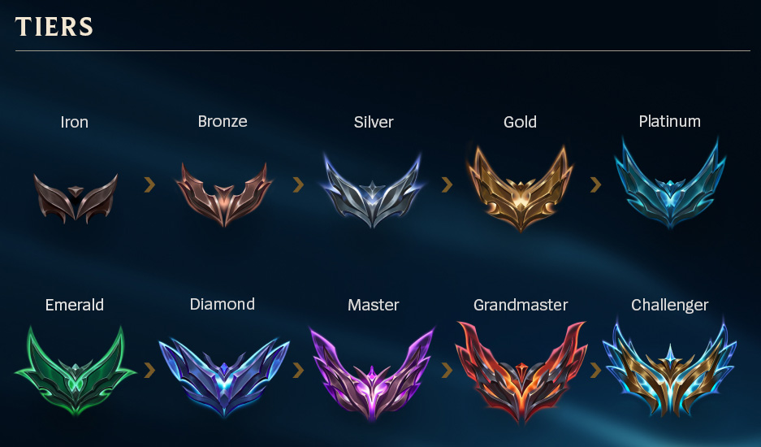
랭크시스템에 오신것을 환영합니다.
30레벨부터 진행이 가능하며 랭크세부는 4단계로 나눠져 있습니다.
더욱 정교한 기술과 상황판단 능력을 요하며 자신의 한계를 시험할 수 있습니다.
해당 티어의 1티어 100점 에서 승리하게 되면 다음 단계로 넘어갈 수 있습니다!
ex) Iron 1 -> Bronze 4
1. 픽

이전의 주먹구구식 무지성 채팅과 다르게 라인을 선택할 수 있습니다.

좌측부터 탑, 정글, 미드, 원딜, 서폿순이며
가장 오른쪽의 상관없음은 ★랜덤으로 배정되므로 주의하세요!
기본적으로 상대팀 5명 본인팀 5명의 챔피언을
픽단계에서 제외하는 벤 시스템이 도입되어 있으며
상대방 및 팀이 선택한 챔피언은 선택 할 수 없으므로
★최소 20개 이상의 챔피언은 숙지 하고 있어야 합니다.
2. 라인별 주요 챔피언
기본적으로 TOP6중 1가지 챔피언은 숙지가 된 상태여야합니다.
또한 AD(물리데미지), AP(마법데미지) 챔피언은 1개씩은 사용해야 할 줄 알아야하며
보다 높은곳으로 올라가고 싶다면 메타에 적응하여야 할 것 입니다.
2-1. 탑

카운터를 맞으면 라인전 구도가 무너지는 라인이며
기본적으로 체급이고 팀파이트시 선봉장에 서는 역할을 합니다.
한타시 단단하고 CC(군중제어 효과)가 강력하거나
상대방의 주의를 끌며 일대 다수에 강한 챔피언을 추천드립니다.
카운터 중요도 : ★★★★★
라인전 난이도 : ★★★☆☆
운영 난이도 : ★★☆☆☆
총합 접근 난이도 : 보통
2-2. 정글

기본적으로 초중반 우월한 상황판단력이 중요한 라인입니다
후술 할 비선공 오브젝트의 컨트롤이 중요하며
그와 동시에 갱(라인개입)을 통해 변수창출이 중요합니다
초반에 강력한 챔피언을 선택하여 활발한 갱이나
정글몹을 먹으며 중후반 우월한 성장을 바탕으로
상대를 압도하는 챔피언을 추천드립니다.
카운터 중요도 : ★★★★☆
라인전 난이도 : ★★★★★
운영 난이도 : ★★★★★
총합 접근 난이도 : 매우 어려움
2-3. 미드

기본적으로 탑이 AD챔피언을 선택한다면
AP챔피언 혹은 메이지라고 불리는 챔피언을 선택합니다.
맵의 중앙을 가로지르는 라인인 미드인만큼 피지컬 및 합류가 중요한 라인입니다.
상대에게 폭발적인 광역 및 단일 데미지를 넣어 한타 및 소규모 교전시
상대 팀에게 교전을 포기하게 하는 능력을 가진 파괴적인 라인입니다.
카운터 중요도 : ★★★☆☆
라인전 난이도 : ★★★★☆
운영 난이도 : ★★★★☆
총합 접근 난이도 : 어려움
2-4. 원딜

서포터와 2인 1조로 라인전을 진행합니다 전형적으론 AD 챔피언을 주로 다루며
상대적으로 긴사거리와 후반을 담당하는팀의 뒷심입니다.
방어력이 약한만큼 탁월한 거리조절이 필요하며 미드에 버금가는 피지컬을 요합니다
초반에는 다소 약한 모습을 보이지만 지속적인 데미지로 후반을 지배하는 라인입니다.
카운터 중요도 : ★★★☆☆
라인전 난이도 : ★★★☆☆
운영 난이도 : ★★★★☆
총합 접근 난이도 : 어려움
2-5. 서폿

원딜과 2인 1조로 라인전을 진행합니다 주로 탱킹 및 변수창출로
원딜을 보조하여 맵의 시야 장악 및 팀에게 도움을 주는 라인입니다.
다른 라인들보다 상대적으로 난이도가 낮은편이며 초심자에게 주로 추천하는 라인입니다.
시야 장악과 상대방을 저지하는 CC(군중제어 효과)가 많은 챔피언을 추천합니다.
카운터 중요도 : ★★☆☆☆
라인전 난이도 : ★★☆☆☆
운영 난이도 : ★★★☆☆
총합 접근 난이도 : 쉬움
3. 오브젝트
앞서 일반에서 다루었던 선공몹과 다르게 비선공몹
및 주요 오브젝트를 소개합니다.
주로 정글러가 컨트롤 하며 ◎4. 대형 오브젝트의 경우 정글러가 부재시 타격하지 않습니다.
3-1. 바위게
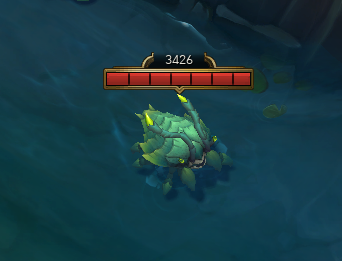※바위게 사망 전 모습
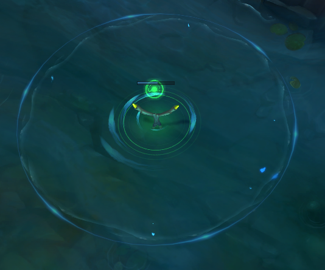
※바위게 사망시 버프 및 이속증가 상태
최초 등장은 3:30초에 등장하며 2:30초 바다 리젠됩니다.
초반 정글러의 상대와 성장격차에 아주 중요한 비선공오브젝트입니다.
강가에 서식하며 사망시 강가중앙의 시야와 함께
위로 지나갈 시 아군에게만 점차 사라지는 이동속도 증가 버프를 줍니다.
3-2. 두꺼비
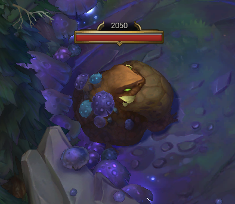
후술할 통칭 블루가 서식하는 지역에 존재하며
초반에 잡기 힘든 정글몹중 하나입니다.
전투시작시 강한 공격을 하나 점차 데미지가 줄어듭니다.
3-5. 늑대
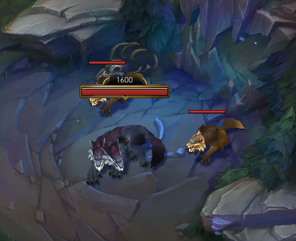
두꺼비와 동일하게 블루가 서식하는 지역에 존재하며
초반에 상대적으로 잡기 쉬운 몹 중에 하나입니다.
칼날부리와 더불어 유일하게 1레벨에 전부 처치시 2레벨로 상승합니다.
3-4. 블루
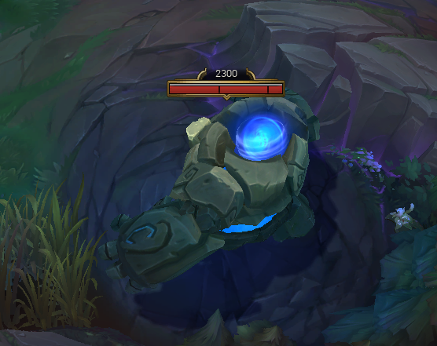
통칭 블루(블루 버프)
처치시 버프를 주는 몬스터중 하나입니다.
처치한 챔피언에게 마나재생력과 쿨타임 감소 효과를 부여하며
많은 경험치를 부여함으로 본인캠프 리젠시 처치순위 1순위입니다.
3-5. 돌거북
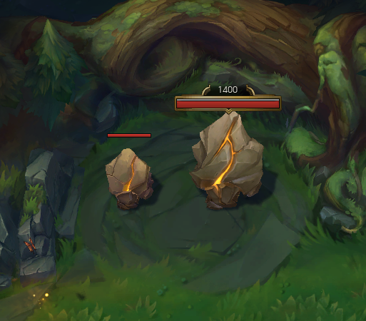
후술할 레드가 서식하는 지역에 존재하며
계속 분열하여 초반에 잡기 힘든 정글몹중 하나입니다.
전투시작시 강한 공격을 하나 처치시 분열하며 데미지가 줄어듭니다.
3-6. 칼날부리
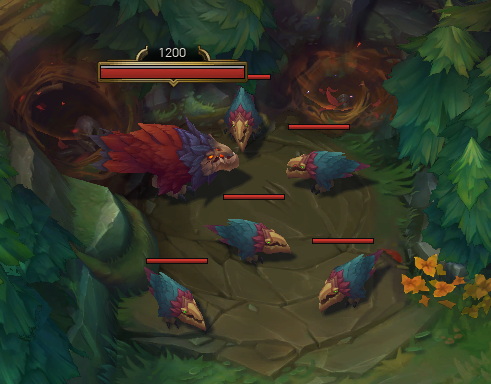
돌거북와 동일하게 레드가 서식하는 지역에 존재하며
초반에 상대적으로 잡기 쉬운 몹 중에 하나입니다.
앞서 소개한 늑대와 더불어 유일하게 1레벨에 전부 처치시 2레벨로 상승합니다.
3-7. 레드
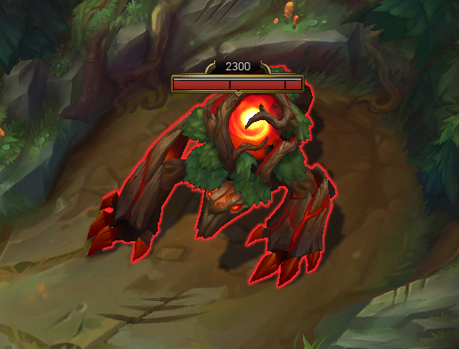
통칭 레드(레드 버프)
처치시 버프를 주는 몬스터중 하나입니다.
처치한 챔피언에게 체력재생력과 기본공격시 슬로우 및 도트데미지 효과를 부여하며
많은 경험치를 부여함으로 본인캠프 리젠시 처치순위 1순위입니다.
◎4. 대형오브젝트
초반에 몇몇 챔피언을 제외하고 혼자 처치하기 힘드며
상대방의 개입시 뺐기면 치명적인 오브젝트입니다.
반드시 정글러와 함께 처치를 요하는 오브젝트입니다.
◎4-1. 드래곤
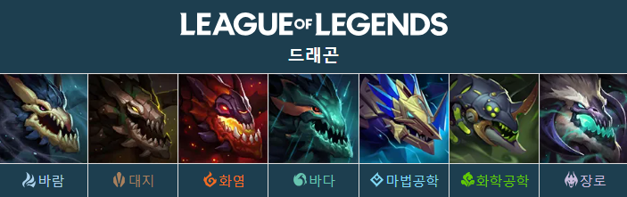
드래곤은 장로 용 제외 총 6가지의 형태를 가지며 처치시 각각 다른 효과를 부여합니다.
2번째 드래곤 처치시 3번째 드래곤의 테마로 전장이 바뀌게됩니다.
드래곤을 한쪽팀이 먼저 4마리 처치시 해당 테마의 드래곤의 영혼을 얻게 됩니다.
이는 매우 강력함으로 게임 승리에 큰 도움을 주게 될 것입니다.
◎4-1-1.바람의 드래곤

다른 용들은 공격 속도가 모두 0.5이지만 바람의 드래곤은 공격 속도가 1으로, 타 용들보다 2배 빠르다.
대신 공격력이 35으로 화염, 바다 용의 절반이고, 단일 대상 공격이다.
버프 효과와 더불어서 게임 초반에 바람용을 더욱 기피하게 만드는 요소.
겉보기에는 DPS가 동일해 보이지만
실제로는 드래곤의 공격에는 기본적으로 현재 체력의 7%에 해당하는 온힛 데미지가 있기 때문에
DPS가 다른 용보다 높아 초반에 잡기 가장 어려운 용이다.
처치시 효과 : 둔화 저항과 전투에서 벗어나 있을 때 이동 속도 +5/10/15/20%
바람 드래곤의 영혼 : 기본 지속 효과로 이동 속도가 20% 증가합니다.
궁극기를 사용하면 이동 속도가 6초간 추가로 50% 증가합니다. (재사용 대기시간 30초)
◎4-1-2.대지의 드래곤

대지의 드래곤은 공격 속도가 화염이나 바다의 드래곤의 절반인 0.25이다.
대신 공격력은 그들의 1.5배인 105이며, 기본 공격이 범위 피해를 입힌다.
DPS는 다른 드래곤들의 75%에 불과하지만, 대신 방어력 및 마법 저항력이 다른 드래곤에 비해 높다.
때문에 실질적으로 드래곤을 잡는 데 받는 총 피해량은 다른 드래곤들보다 조금 낮은 수준이며,
잡는 시간이 오래 걸리기 때문에 초반에 몰래 솔용을 시도하는 데 가장 리스크가 큰 드래곤이다.
처치시 효과 : 방어력 및 마법 저항력 +5/10/15/20%.
대지 드래곤의 영혼 : 5초 동안 피해를 입지 않으면 220
(+추가 공격력의 16%) (+주문력의 13%) (+추가 체력의 13%)의 피해를 흡수하는 보호막을 획득.
◎4-1-3.화염의 드래곤

화염의 드래곤의 공격 속도는 0.5, 공격력은 70이다.
또한 기본 공격이 대상 뒤의 부채꼴 모양 범위 내의 적들에게 광역 피해를 입힌다.
솔용 시에는 바람의 드래곤보다 체력 관리가 용이하나,
초반에 바텀 라이너들과 정글러가 함께 옹기종기 모여서
화염용을 사냥할 때는 광역 피해가 거슬리는 요소로 작용한다.
때문에 화염용을 잡을 때는 서로 다른 방향에 서서 광역 피해를 받지 않도록 유도하는 것이 좋다.
처치시 효과 : 중첩마다 3%의 공격력 및 주문력을 얻습니다.
화염 드래곤의 영혼 : 3초마다 다음 기본 공격 또는 공격 스킬이
작은 광역 폭발을 일으켜 대상과 주변 적들에게 100 (+추가 공격력의 18%) (+주문력의 12%)
(+추가 체력의 2%)의 적응형 피해를 입힙니다
◎4-1-4.바다의 드래곤

바다의 드래곤의 공격 속도는 0.5, 공격력은 70이다.
또한 기본 공격은 단일 대상 공격이며, 적중 대상에게 2초 동안 30%의 둔화 효과를 부여한다.
때문에 상대 팀의 방해 없이 드래곤을 사냥할 경우 가장 잡기 쉬운 드래곤은 바다용이다.
그러나 바다용 앞에서 교전이 벌어질 경우,
바다용의 기본 공격에 묻는 둔화 효과가 변수를 창출할 수도 있다.
또한 몰래 솔용을 시도하다가 적에게 발각될 경우 둔화 때문에 도주하기 힘들어지기에,
상대 팀의 방해가 있을 경우 바다용은 가장 잡기 어려운 드래곤이 된다.
처치시 효과 : 매 5초마다 잃은 체력의 2/4/6/8% 회복.
바다 드래곤의 영혼 : 적 챔피언에게 피해를 입히면 4초에 걸쳐
150 (+추가 공격력의 25%) (+주문력의 15%) (+추가 체력의 7%)의 체력 및 100
(+최대 마나의 2.5%)의 마나를 회복합니다.
미니언 또는 몬스터에게 피해를 입히면 해당 회복 효과의 30%가 발동됩니다.
◎4-1-5.마법공학 드래곤

마법공학 드래곤은 기본 공격 속도와 대미지가 높고,
4번째 공격마다 본인의 영혼 효과와 동일하게 연쇄 번개로 광역 피해를 입히고
둔화시킨다. 모든 평타가 둔화인 바다의 드래곤만큼은 아니지만
은근히 처치하기 까다로운 드래곤.
처치시 효과 : 중첩마다 5의 스킬 가속 및 5%의 공격 속도 효과를 얻습니다.
마법공학 드래곤의 영혼 : 8초마다 기본 공격이나 스킬로
적에게 피해를 입히면 번개를 발사해 25~50롤아이콘-레벨의 피해를 입히고
근거리 적과 원거리 적을 각각 45/35% (+추가 공격력 100당 3%) (+주문력 100당 1%) (+추가 체력 1000당 1%)
둔화하며 둔화 효과는 2초에 걸쳐 사라집니다. 이후 번개는 근처 4명의 적에게 날아가 같은 피해를 주고
둔화 효과를 적용합니다. 다른 대상에게 받은 둔화 효과는 중첩되며,
원거리 적을 공격하면 둔화 효과가 더 느리게 해제됩니다.
◎4-1-6.화학공학 드래곤

화학공학 드래곤은 드래곤의 현재 체력이 낮을수록 공격 속도가 빨라진다.
따라서 다수가 빠르게 드래곤을 먹고 빠지는 버스트 상황에서는 문제가 되지 않으나
이른 시간에 혼자 드래곤을 사냥하는 상황에서는 가장 잡기 어려운 드래곤이다.
다른 용이라면 분명 잡는 견적임에도 불구하고 사냥하다가 처형당할 가능성이 있다.
처치시 효과 : 중첩마다 6%의 강인함 및 6%의 체력 회복 및 보호막 효과를 얻습니다.
화학공학 드래곤의 영혼 : 체력이 50% 이하일 때
주는 피해가 11% 증가하고 받는 피해가 11% 감소합니다.
◎4-1-7.장로 드래곤

어느 한 팀이 4번째 드래곤을 챙긴 이후, 즉 영혼을 획득한 이후에 등장합니다.
해당 드래곤은 처치시 바로 효과가 생기며 해당 드래곤이 등장할시 게임중 가장 중요한
키포인트 역할을 하는 드래곤으로 장로 버스트를 했다가 뺏기기라도 하면 영혼 따위로는
감당할 수 없는 재앙이 펼쳐지니 성급한 트라이는 금물이다.
드래곤의 성위
(게임 시간 25분~45분에 따라)
◎4-2. 공허 유충
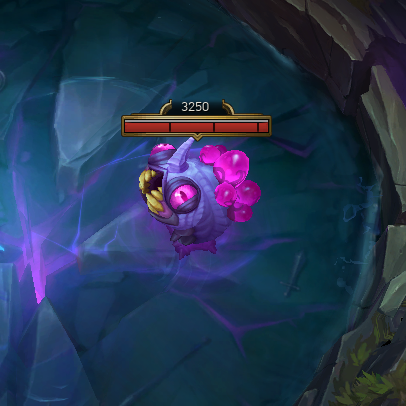
게임 시작 뒤 6분에 상단 둥지에 3마리씩 생성된다.
공격 방식은 물기와 공허 진드기 소환이 있으며,
한 마리가 죽으면 나머지 개체는 죽지 않고 최대 체력의 25%+잃은 체력의 25%를
회복하기 때문에 일반적인 광역 스킬로 유충 두 세마리를 동시에 처치하는 것은 불가능하다.
공허 유충을 처치하면 모든 팀원이 포탑을 공격할 때
추가 고정 피해를 입히는 버프를 영구히 제공받는다.
고정 피해량은 공허 유충을 처치한 수에 비례한다.
공허 유충을 4마리 잡으면 타워를 공격할때 공허 진드기가 소환되고
6마리를 잡으면 두 마리씩 소환된다.
◎4-3. 협곡의 전령
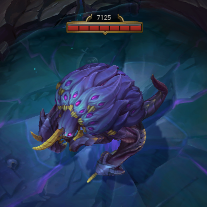
출몰 시간은 게임 시작 후 14분 뒤이며, 게임 내에서 단 한번만 생성된다.
19:45가 되면 완전히 사라지고 그 이후로 재출몰하지 않는다.
후방의 눈을 기본 공격당하면 최대 체력의 12%에 해당하는 고정 피해를 입습니다.
전령의 눈을 공격당하면 10초 동안 눈을 감습니다.
챔피언의 기본 공격은 눈을 감는 시간을 2.5초만큼 줄입니다.
3초 이내에 눈을 떴거나 체력이 15% 이하면 눈을 뜨지 않습니다.
체력이 65.75% 그리고 32.75%일 때
공격력의 300%만큼 물리 피해를 주는 휘두르기 공격을 합니다.
협곡의 전령은 모든 군중 제어기에 면역입니다.
처치 보상 : 전령의 눈
보유 시: 귀환이 강화되며 사용 전이나 전령의 눈의
지속 시간이 끝나기 전까지 지속됩니다.
사용 시: 1초 동안 정신 집중 후 전령의 눈을 소비하여 협곡의 전령을 소환합니다.
소환된 전령은 근처 공격로로 이동하여 적 포탑을 공격합니다.
◎◎◎◎◎4-4. 내셔 남작
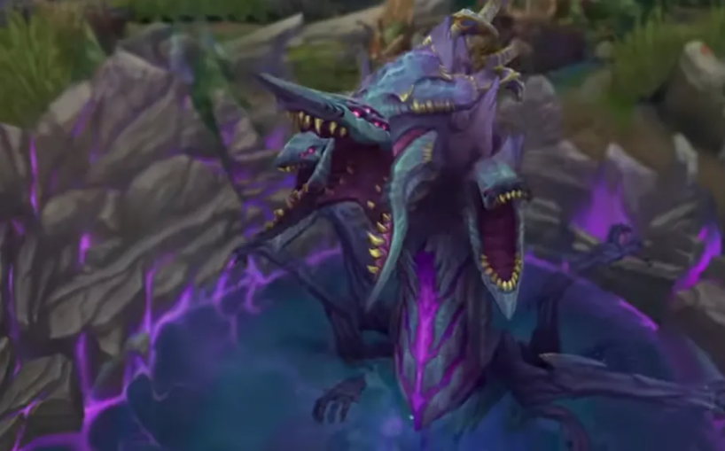
처치 보상으로 남작의 도움이라는 강력한 버프를 살아있는 아군 챔피언 모두에게
부여함으로써 게임을 유리하게 이끌 수 있는 중요한 역할을 한다.
비슷한 옵젝인 장로 드래곤의 경우 바론보다 잡기 쉽고,
전투능력에 치중 했다면 바론은 실질적 게임의 승리유무인 넥서스파괴 즉,
라인관리와 관련한 버프를 주기에 유리한팀에게는 굳히기를,
불리한 팀에게는 게임 체인저의 수단이 된다.
그렇기에 수적으로 밀려도, 혈혈단신으로 둥지에 들어가 목숨을 내주고
바론을 스틸하는 줄타기 전략을 구사하기도 한다.
처치시 효과 :

내셔 남작이 처치되면 내셔 남작을 처치한 팀에서 살아있는 모든 팀원들은
이라는 버프를 받는다.
180초 동안 유지되며 버프가 유지되는 중 사망 시 즉시 소멸된다.
공격력과 주문력 수치 증가.
내셔 남작이 처치되는 시간에 따라 강화 수치가 결정된다.


귀환을 강화해 정신 집중 시간을 반으로 줄인다. 기존 8초 -> 4초
미니언 강화
- 모든 미니언
- 근거리 미니언
- 원거리 미니언
- 대포 미니언
- 슈퍼 미니언
모든 미니언이 광역, 지속 피해를 75%만큼 덜 받게 된다.(슈퍼 미니언 제외)
적 미니언이나 포탑이 거리 800 안에 있으면 이동 속도가 50% 증가.
크기가 30% 커짐, 공격 사거리 75 증가.
챔피언에게 받는 피해가 20~40분에서 50~70% 감소. (30분 기준 58% 감소.)
공격력 20 증가. 투사체 50% 가속. 사거리 100 증가.
챔피언에게 받는 피해가 20~40분에서 50~70% 감소. (30분 기준 58% 감소.)
공격 사거리 750 증가. 공격력 50 증가하지만 공격 속도 50% 감소.
범위 200의 광역 피해를 입힘, 건물에 1.5배의 피해를 입힘. 크기 30% 증가.
공격 속도 25% 증가,
적 미니언이나 포탑이 거리 800 안에 있을 경우 이동 속도 50% 증가. 크기 15% 증가